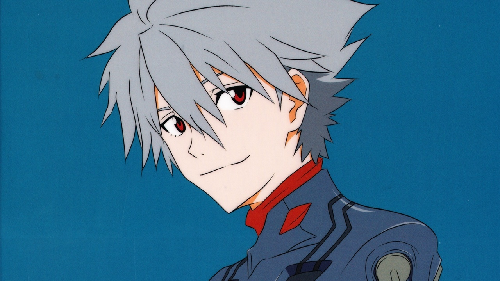

Kaworu Nagisa
Kaworu Nagisa es un personaje secundario de la serie Neon Genesis Evangelion. Es el Quinto Niño, y es el último piloto de la serie. Kaworu es un personaje misterioso y enigmático, y su verdadera lealtad y motivaciones son uno de los principales misterios de la serie. A lo largo de la serie, Kaworu se ve envuelto en varios conflictos y dilemas morales, y su personaje es uno de los más intrigantes y enigmáticos de la serie.